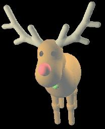
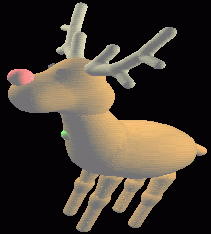

I - UTILISATION
Nous avons implementé les différentes fonctions sur la création de blob's tree de façon intéractive. Les différentes fonctions sont dans le menu "création/TP SYNTHESE" :
- dans " En test" : se trouvent les quelques fonctions
sur les blob's tree qui sont en cours de réalisation et qui mérite
d'etre utilisées prudemment.
- dans BLOB TREE : se trouvent les différentes
fonctions qui servent à la création de l'arbre.
- dans BLOB : se trouvent les fonctions de création
de blob unitaire (feuille de l'arbre) comme la sphére ou le cylindre.
II - DESCRIPTION DU PROJET
Ce projet a pour but la réalisation de blob's tree à l'aide de NanoEdit de façon intéractive et plus induitive ,que la création d'un fichier C ou C++ réalisant la meme chose .
Pour cela , le projet se décompose en 3 parties :
- Une déclaration de type logique qui se trouve dans
les fichiers t_blob.h et t_blob.c
- La création des blobs untaires qui se trouve dans
o_blob.cpp
- La gestion des opérations sur les différents
noeuds des arbres qui se trouve dans o_tree.cpp
1°) Descriptions des fichiers
Dans t_blob.h et t_blob.c :
Nous avons declaré un type logique L_blob qui servira à definir un type pour NanoEdit pour la récupération et le renvoie des blobs .Ceci ayant pour but, d'effectuer des opérations sur les blobs afin de construire l'arbre ou le blob's tree.
Dans o_blob.cpp :
Ce programme possede tout d'abord la structure du blob unitaire,son
affichage et sa création.
struct bob
{
Implicit *blob ; -> sert
a l'affichage des blobs
List<Triangle> *facettes[10] ; -> de meme
Triplet coord; -> Coordonnées du blob ou d'un sommet du blob
selon les cas
Triplet coord2; -> Coordonnées du second sommets du blob ou de
sa normale selon les cas
int nb;
-> Discrétisation de l'affichage
TreeNode *pat; -> blob renvoyé afin d'y effectuer certaines opérations
double rayon,intensite,rayon2,seuil; -> divers coefficient pour des fonctions
de
constructions de blob
int type;
-> de meme
} ;
static void affiche_blob(struct bob *o, const Champ *ch, const char
*urgent)
Sert à l'afiichage des
blobs.A ce moment ,il faut que le champ blob de la structure bob soit différent
de NULL ,ce qui se passe car on réalise sa création avant.Les
autres champs sont donné par les différents parametrage de
NanoEdit.
static void detruit_blob(struct bob *o)
Sert à la destructions des objets créé.
calcul_blob_xxxxxx(struct bob *o)
Calcul le champ blob de la structure o de type bob et donnera la forme du blob donné par xxxxx qui peut etre sphere ou arete.De plus,on cree ici ,un arbre binaire car il n'y a pour l'instant aucun autre moyen pour implementer des blob unitaire . On doit, aussi, créer un arbre binaire car lors de certaine opération sur les noeuds, il se peut que le blob créé disparaisse.Nous remplirons, ici, le champs "pat" pour le renvoyer afin d'y effectuer diverse opérations.
Remarque : toute les fonctions implemantées,
içi, sont dans le menu "création/TP SYNTHESE/BLOB" ou "création/TP
SYNTHSE/En test"
Dans o_tree.cpp :
struct essai
{
TreeNode *resultat; -> Sert à l'envoie du blob tree réalisé
TreeNode *pat; ->pat
et bobby serve pour les fonctions qui sont en
TreeNode *bobby;
cours de developpement
Implicit *blob ;
-> Pr affichage de meme qu'avant
List<Triangle> *facettes[10] ; -> Pr affichage de meme qu'avant
int nb;
-> de meme qu'avant
double seuil,type,coef,a,b,c; -> Sert de coefficient(a,b et
c pour les tests)
Triplet coord,coord2,coord3; ->Sert à la construction des
vecteurs
};
static void affiche_blob(struct essai *o, const Champ *ch, const char
*urgent)
static void detruit_blob(struct essai *o)
Réalise de meme que pour un blob unitaire.
static void calcul_xxxxx(struct essai *o)
Calcul les opérations sur le noeud du
blob's tree.
Si la fonctions est du type static void calcul_xxxx2 : alors l'opération s'effectue sur un P-arbre, c'est à dire celui-ci peut posseder autant de branche qui veut
Si la fonction est du type static void calcul_alpha :cette opération s'effectue sur un blob ou un blob's tree mais par sur un ensemble de blob.
Sinon les autres fonctions sont en cours de developpement et ne doivent
pas etre prise en compte.
- Lors de long calcul c'est à dire de blob volumineux NanoEdit à tendance à planter sans raison
- Les fonctions qui sont en cours de développement réalisent des choses très étranges ???
- Long temps de calcul des surfaces.
- Imcompatiblité avec le nouveau cube.h.
Des exemples se trouve dans le répertoire "/home/r-andr99/PSI/MODELES/"
- bob1.ne : représente un ours réalisé à l'aide de NanoEdit
( En image de fond,nous avons nounours et son ami)
- bob2.ne : un exemple de blob's tree réaliser sur un ensemble de blob et blob's tree
- shapes.cpp : un exemple de création de blob par une ancienne méthode sans NanoEdit.
- superelan.ne : un modéle réalisé par des blobs

V - POUR PLUS D'AIDE
Il faut aller voir la page web de Mr GALIN
http://bat710.univ-lyon1.fr/%7Eegalin/Doc/Blob/index.html